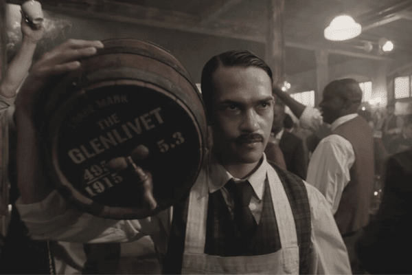
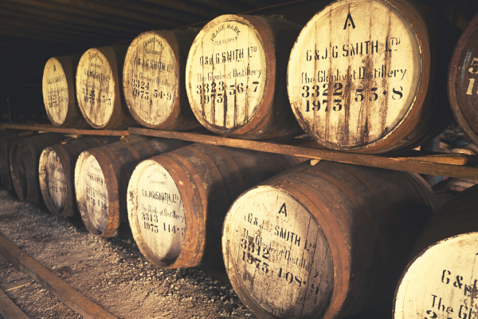
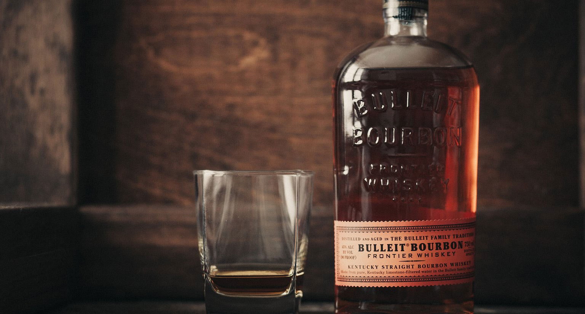

Quienes son?

Los barones del scotch, fueron los grandes protagonistas del auge de whisky en todo el mundo. Este es un homenaje a su legado.
Scotch

La legislación establece que la denominación “Scotch” solo se puede utilizar para whiskys que hayan sido destilados con agua y cebada malteada y envejecido en barricas de roble en Escocia por no menos de tres años.
Bourbon

Envejecido en barricas de roble quemado en su interior, por dos años como mínimo, considerándose un bourbon de buena calidad a aquel que tiene más de cuatro años de envejecimiento.